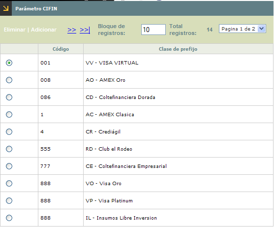
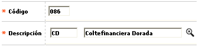

Parámetros CIFIN
Mediante esta función se habilita el mantenimiento y consulta de la tabla que contiene la parametrización requerida por el sistema, para la generación del archivo a enviarse a la central de riesgo CIFIN, con la información básica de las tarjetas, por franquicia.

El formulario contiene las opciones Adicionar y Eliminar
Adicionar: Si el usuario invoca la opción Adicionar se despliega un nuevo formulario.

Descripción de campos
Código |
Campo alfanumérico de tres (3) posiciones, obligatorio, en el que se registra el código que identificará a cada clase de prefijo cuyos productos van a ser reportados dentro del archivo remitido a la central de riesgo CIFIN. |
Descripción |
Este campo obligatorio contiene lista de valores con las Clases de prefijos de la que debe seleccionarse cada clase de prefijo cuyos productos van a ser reportados dentro del archivo remitido a la central de riesgo CIFIN. |